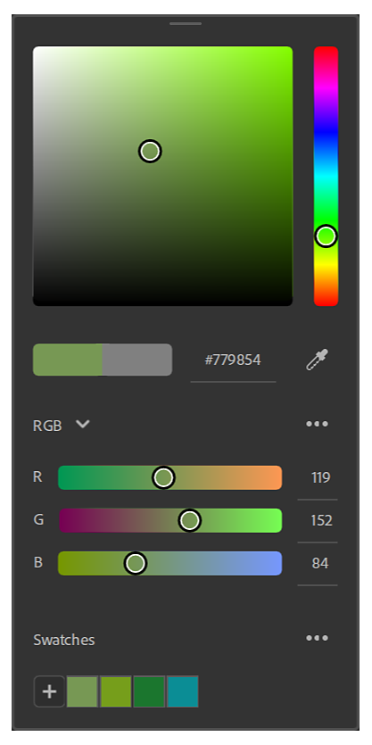
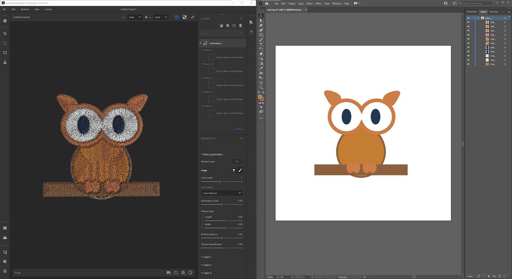
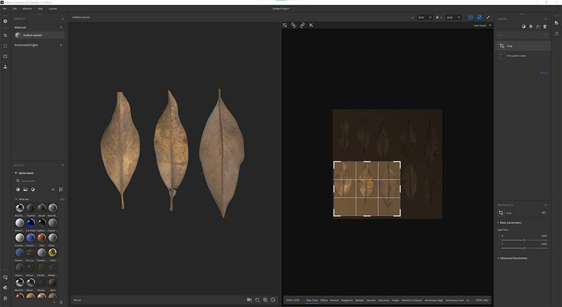
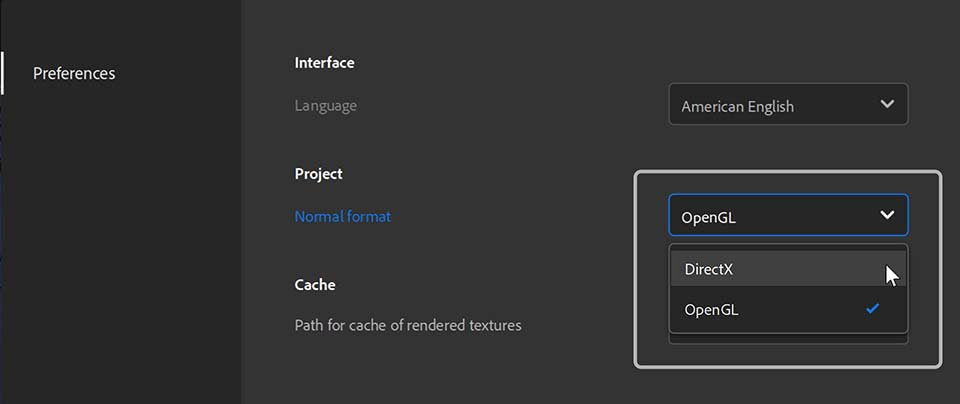
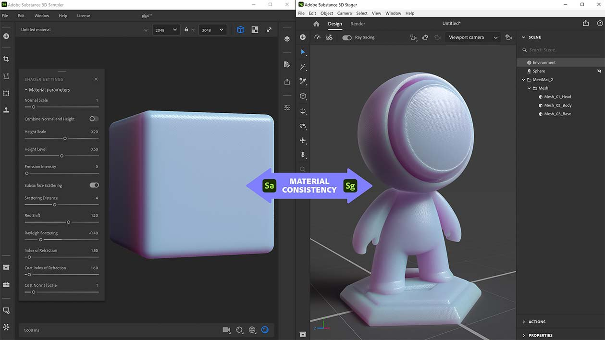

Adobe Substance 3D Sampler 3.1 introduces a new color picker, support for SVG files, and improved interoperability with Stager, Photoshop and Illustrator.
Release date: September 28, 2021
This release adds a new Color Picker that includes an eyedropper and support for swatches.
The Color Picker appears whenever you need to select a color. It can be moved anywhere on your screen(s).

Sampler now supports SVG files. You can import them in your assets, directly in the layer stack or in an image input of layer.

A new “edit in” feature brings huge flexibility to updating imported images. If you want to tweak your SVG file, you can simply edit the file straight in Illustrator. Sampler will instantly update your visual with the new SVG.
Sampler now gets a proper and revamped Crop widget to easily define the cropped area. You will also get not stretched results when cropping non-square images into square textures.

Edit your Preferences to set the normal format you need for your workflow. Your normals will be imported, displayed and exported in the format you select in preferences.

All material parameters of the Shader settings (normal scale, height scale, height level,...) will be exported in the SBSAR file to be read in Substance 3D Stager for a perfect material match.

(Released September 28, 2021)
Added:
Fixed:
Known Issues: